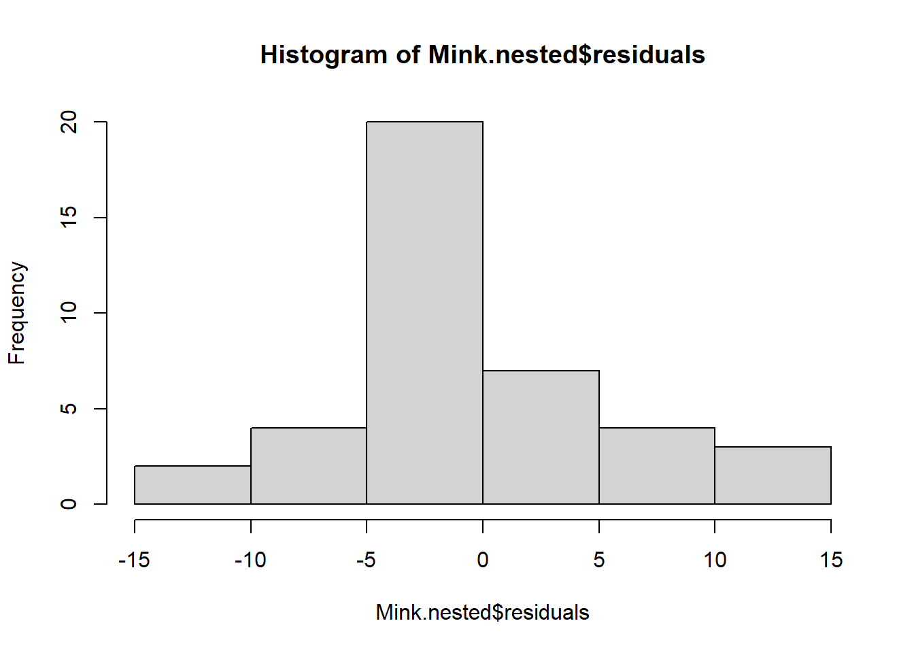
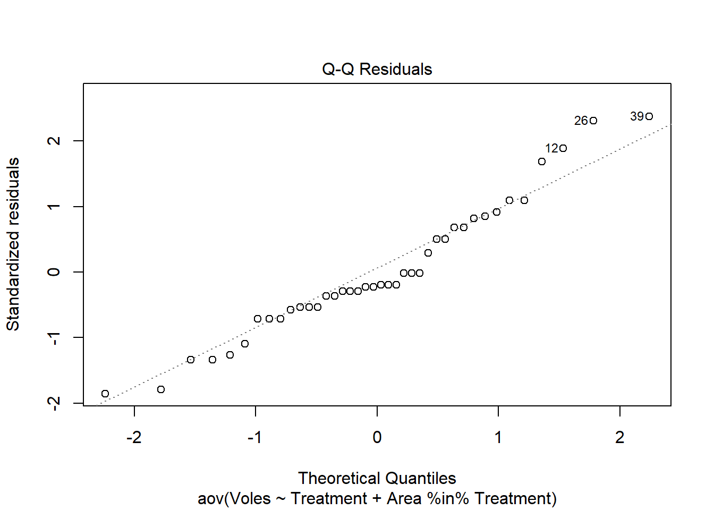
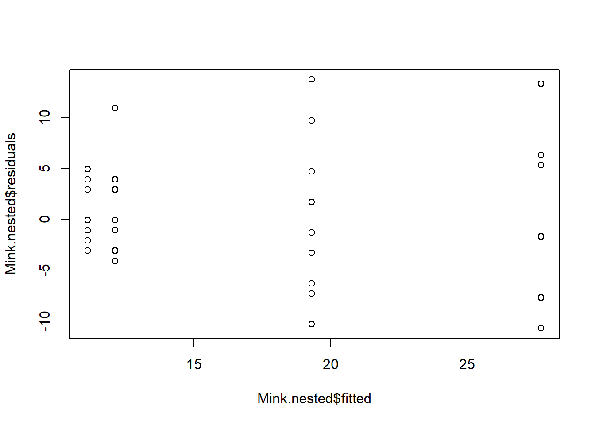

En el diseño de ANOVA de dos vías, los dos factores se conocen como factoriales (es decir, hay todas las combinaciones de cada nivel de cada factor). Otros diseños experimentales presentan factores que se denominan anidados. Esto ocurre cuando cada nivel de uno de los factores es único para solo un nivel del otro factor. La diferencia se ilustra mejor con los siguientes dos diseños experimentales donde hay dos factores, A y B.
En el diseño anidado, los niveles del factor B aparecen en solo uno de los niveles del factor A, no en ambos. Esto suele suceder con factores como “sitio” o “área”: generalmente pertenecen a solo un nivel de tu otro factor (por ejemplo, si se contrastan el norte y el sur del puerto, un suburbio no podría estar en ambas categorías).
Se dice que el factor B está anidado dentro del factor A, generalmente escrito como B(A). Estos diseños tienen diferentes fuentes de varianza en comparación con los diseños factoriales y no tienen un término de interacción. Los diseños son bastante comunes en ecología y ciencias ambientales, y se utilizan a menudo para descomponer la varianza en muestreos jerárquicos espaciales (por ejemplo, hábitats, áreas dentro de hábitats, parcelas dentro de áreas, etc.).
Los ejemplos a continuación provienen de un experimento que investiga el impacto del visón americano introducido en pequeños roedores (topos) en Finlandia. La hipótesis era que el visón se alimenta de los topos, reduciendo así el número de topos y limitando su tamaño de población. Para probar esto, se eliminaron los visones de áreas grandes (> 20 km2) en el Mar Báltico. La hipótesis nula del experimento es que el recuento medio de topos en las islas de los sitios de eliminación será igual al recuento medio de topos en las áreas de control.
Los datos representan dos tratamientos (eliminación de visones (mink) y control) y dos áreas anidadas dentro de cada tratamiento. Luego, hay 10 muestras en cada área. Cada una de estas muestras representa el número de topillos (voles) individuales atrapados en una isla (todas las islas estaban separadas por más de 300 m, lo que garantiza cierta independencia) durante 4 noches.
El diseño es anidado porque un área no puede pertenecer tanto a un tratamiento de eliminación como a un control. Es útil pensar en las áreas como las réplicas para el tratamiento, y las muestras individuales como las réplicas para cada área.
Ejecutando el análisis
Los datos para un diseño anidado deben estar en formato de muestras como filas y variables como columnas. Una columna debe corresponder a la variable dependiente y, en este caso, el número de topillos (voles). Otra columna debe contener los niveles del factor fijo A, Tratamiento. Finalmente, una columna para los niveles del factor aleatorio anidado B, Área.
# Input Mink <-read.csv(file ="Mink.csv", header =TRUE)# Check the structurestr(Mink)
La salida es un poco diferente al ANOVA factorial. La sección superior proporciona una prueba de significancia del efecto fijo, Tratamiento, que es lo que nos interesa. Los residuos para esta prueba son aquellos asociados con el efecto aleatorio Área.
Un cociente F significativo (P<0.05) para un factor anidado indica una alta varianza entre subgrupos dentro de un grupo. Por ejemplo, una diferencia en el número medio de topillos(voles) entre las dos áreas dentro de un tratamiento. Esto se espera, sin embargo, conlleva pocos grados de libertad para probar efectos principales. Además, sugiere que los tratamientos pueden no tener un efecto uniforme en los niveles del factor anidado. Por ejemplo, los topillos(voles) en un área de eliminación mostraron una respuesta más fuerte que en otra área.
Cocientes F
Entre grupos = MSentre/MSsubgrupo
Factor B = MSsubgrupo/MSResidual
Grados de libertad
Entre grupos = (a - 1) (donde a = número de niveles del Factor A)
Entre subgrupos = a(b - 1) (donde b = número de niveles del Factor B)
Dentro de subgrupos = ab(n - 1) (donde n = tamaño de la muestra)
Cuando hay más de 2 niveles del factor fijo de interés, se puede utilizar un análisis post hoc para determinar qué grupos difieren. Consulta el módulo post-hoc para obtener más información.
Agrupamiento
Siempre examina los factores anidados antes de los niveles superiores. Si la varianza explicada por el factor anidado es insignificante, se puede agrupar. Si la razón F de MSsubgrupo/MSentre no es significativa, entonces no necesitas subgrupos y puedes realizar un análisis de un solo factor.
Incluso si MSsubgrupo/MSentre no es significativo a = 0.05, puede haber efectos de subgrupos (puede haber un alto error de Tipo II). Por precaución, solo agrupa SS cuando P>0.25, de modo que haya muy poca probabilidad de que aceptes incorrectamente la hipótesis nula de no efecto.
Supuestos a verificar
Los mismos supuestos de los modelos lineales se aplican a los ANOVA anidados: independencia, normalidad y homogeneidad de varianzas. La independencia debe considerarse en la etapa de diseño (ver el módulo de independencia). Ahora podemos verificar los supuestos de homogeneidad de varianza (es decir, que los residuos sean homogéneos, es decir, aproximadamente iguales) y normalidad (distribución equilibrada de los datos alrededor de la media, sin valores atípicos extraños).
Debido a que las pruebas del factor fijo A utilizan las medias del factor anidado B, los supuestos de homogeneidad y normalidad se aplican con respecto a las medias del factor B. Es probable que la normalidad del factor A siga una distribución normal basada en el Teorema del Límite Central.
Recomendamos una evaluación cualitativa de los supuestos, en lugar de una prueba formal como la prueba de Cochran. Los modelos lineales en general son bastante “robustos” ante la violación de estos supuestos (heterogeneidad y normalidad), dentro de ciertos límites.
El supuesto de normalidad se puede verificar mediante un histograma de frecuencias de los residuos o mediante un gráfico de cuantiles donde los residuos se trazan en función de los valores esperados de una distribución normal. El histograma de residuos debe seguir una distribución normal. Si los puntos en el gráfico de cuantiles se encuentran principalmente en la línea, los residuos se distribuyen de manera normal. Las violaciones de la normalidad se pueden corregir mediante transformaciones o mediante el uso de una distribución de errores diferente en un GLM. Consulta el módulo de GLM para obtener más información. La función plot() en un objeto de modelo proporciona una serie de diagnósticos gráficos del modelo, el segundo de los cuales es un gráfico de cuantiles.
hist(Mink.nested$residuals)

plot(Mink.nested, which =2)

Heterogeneidad de varianzas se indica por un patrón no aleatorio en el gráfico de residuos vs. ajustados. Si hay patrones fuertes, una solución potencial es transformar la variable de respuesta y. Si esto no soluciona el problema, la mejor solución es utilizar una distribución de error diferente en un marco de modelo lineal generalizado (GLM).
plot(Mink.nested$residuals ~ Mink.nested$fitted)

# Alternative optionplot(Turtles.ANOVA, which =1)
Comunicación de los resultados
Escrita El factor de subgrupo rara vez es de interés y, por lo tanto, se le da poco énfasis en los resultados. Por ejemplo, la abundancia de topos fue significativamente mayor donde se eliminaron visones(mink) (F = 38.39, P <0.001).
Visual Un diagrama de caja sería una forma adecuada de mostrar las diferencias entre los grupos del factor de interés, en este caso Treatment.
Más ayuda
Escribe ?aov para obtener la ayuda de R para esta función.
Quinn y Keough (2002) Experimental design and data analysis for biologist. Cambridge University Press.
McKillup (2012) Statistics explained. An introductory guide for life scientists. Cambridge University Press.